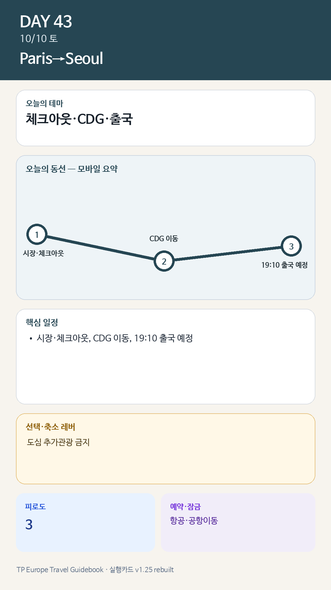

Day 43 · 10/10 토 · Paris→Seoul
P0 연결
- 핵심 실행
- 체크아웃·CDG·19:10 출국
- 권장 출발
- 호텔 기준 14:00 전후 출발 권장
- 완충
- 공항 3시간 전 도착
시간표
| 시간 | 일정 | 실행 포인트 |
|---|---|---|
| 08:00–09:00 | 숙소 아침·남은 음식 정리 | 유리병·냉장식품 처리 |
| 09:00–10:15 | 마지막 시장·빵집 또는 동네산책 | 멀리 이동하지 않음 |
| 10:15–12:00 | 체크아웃·짐 보관 | 숙소조건 확인 |
| 12:00–13:00 | 가벼운 점심 | 공항 전 과식 금지 |
| 14:00–15:00 전후 | CDG 이동 시작 | 항공편 19:10 기준, 교통·보안 여유 확보 |
| 19:10 예정 | 인천행 출국 | 실제 항공권 기준 재확인 |
이 날의 메모
파리의 마지막 아침과 귀국
PSG 리그 홈경기: 현재 10/10 홈경기가 일정표에 있으나 경기시간이 미정이고 출국편과 충돌하므로 방문 불가로 본다.
상세 실행 확인
- 최고 리스크
- 교통장애·수하물·체크아웃
- 우선 삭제
- 도심 추가관광 전부
- 대체안
- 숙소권 짧은 산책만
- 식사·휴식
- 도심 또는 공항 간단식
- 잠금 필요
- 항공·공항이동
모바일 카드 이미지

카드의 지도영역은 일정 순서를 보여주는 개요이며 내비게이션이 아닙니다. 실제 도보·운전 경로는 Google Maps에서 다시 계산하세요.